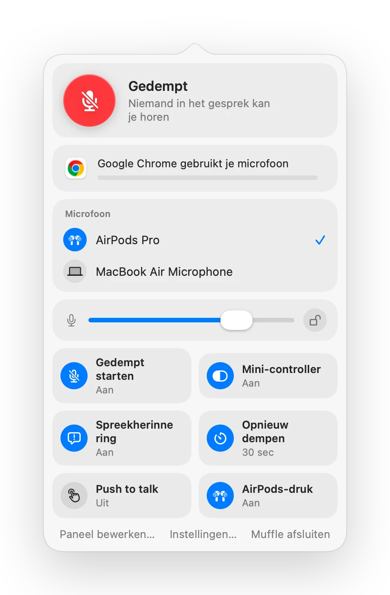

Zoom dempen met AirPods of een sneltoets op een Mac
Zooms eigen sneltoets, Command-Shift-A, werkt alleen wanneer Zoom het actieve venster is. Als je aantekeningen maakt of een ander venster deelt, kost het zoeken naar de dempknop een paar onhandige seconden.
Muffle geeft je één dempbediening voor Zoom en elke andere app: je AirPods, een globale sneltoets of de menubalk. Het dempt de microfoon zelf, dus het werkt in de Zoom-app en bij Zoom-gesprekken in de browser.
Zoom overal dempen
- 1
Installeer Muffle en geef microfoontoegang.
- 2
Neem zoals gewoonlijk deel aan je Zoom-vergadering.
- 3
Druk op je AirPods-steeltje of op Control-Option-M om te dempen, vanuit elke app.
- 4
Houd Control-Option-M ingedrukt terwijl je gedempt bent om te praten, en laat los om weer te dempen.

- Als Zoom op je Mac zelf de druk op de AirPods opvangt, dempen de sneltoets en de menubalk je nog steeds via Muffle.
- Zoom geeft je mogelijk weer als ingeschakeld terwijl Muffle de microfoon heeft uitgezet. Deelnemers horen stilte.
Veelgestelde vragen
Vervangt Muffle de dempknop van Zoom?
Het werkt ernaast. Muffle schakelt de microfoon uit voor elke app, zodat je Zoom kunt dempen zonder naar het venster te wisselen.
Kan ik push-to-talk gebruiken in Zoom?
Ja. Houd de Muffle-sneltoets ingedrukt om te praten terwijl je gedempt bent. Dit werkt in Zoom en in elke andere app.